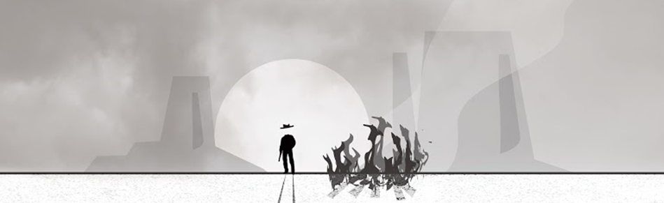
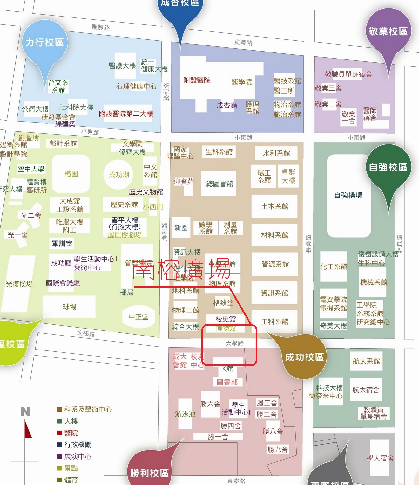

成火晚會 Fire Fiesta

從這次校慶的主題「拓荒」出發，以「承繼前人努力的點滴，在感恩珍惜的同時，邁開嶄新時代的第一步」為開幕祭典活動氛圍與活動表演設計方向，希望能讓有空參與的學生，在來過開幕祭典後，懷著感恩的溫暖與堅毅的自信，繼續與身邊的夥伴，一起在成大為周遭的人們努力奮鬥。
而成大的營隊營隊非常盛行，營隊給人的感覺為團隊合作，而最能夠代表營隊的就是營火，是一種團結的精神象徵，讓大家團聚在某一氛圍的強大力量，也是在大學拓荒學習的過程中，是個火熱的溫暖回憶。因此想以成大之火為此次拓荒季的精神象徵，代表成大團結互相扶持的特質。
火在哪裡 Where?
11/8 (六) 18:00 @ 南榕廣場 (成功校區博物館前至勝利校區K館前連通廣場)
位置示意圖
